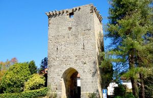
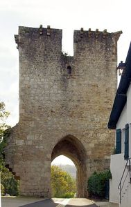
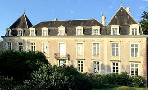
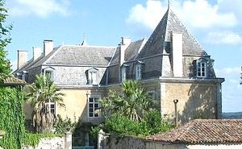
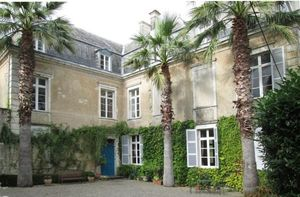
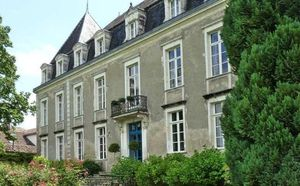

Recensement Jean-Claude Truffet
| Département | 40 — Landes |
| Canton | Peyrehorade |
| Commune | Hastingues |
| Type d'édifice | Château |
| Période d'origine | XIII-XV |






ESTRAC, le château est situé au cur d'une bastide du XIVe siècle qui domine la vallée des Gaves Réunis. Le château « Bayle Vieux » est achevé par John de Hastings (1347-1375) Le château fut acheté par Bayonne et fut rasé. En 1407, Bayle Vieux est reconstruit. En 1500, le château Bayle Vieux existe encore dans toute sa splendeur. Bertrand Destrac est anobli en 1661 par Louis XIV. Ecuyer, il est secrétaire du Roi, conseiller et secrétaire de la couronne de Navarre, également secrétaire du duc de Gramont Antoine II de Gramont (1572-1644), comte de Gramont, de Guiche et de Toulonjon, vicomte puis comte de Louvigny, "souverain de Bidache". Le duc de Gramont layant nommé Juge Royal dHastingues. Le château reste propriété de la famille dEstrac jusquen 1792 pour être acheté par Marie-France Deville veuve Clérisse après avoir négocié pendant trois ans avec M. Bachelier dAgés, dont lépouse était héritière de la famille dEstrac. Les Clérisse sont une famille de négociants en laine installée depuis le XVIIe siècle à Oloron. Pierre Clérisse, a établi, au début du XVIIIe siècle, un commerce avec St-Domingue, où son fils séjournera pendant 35 ans. , Le château est acheté par un danois qui laurait vidé. Le château est propriété du couple Dürr, de nationalité allemande, de 1980 à 2015. De nouveaux propriétaires sen portent acquéreur en 2016 . Le château d'Astrac est classé aux M.H. depuis le 9/07/1942.
HASTINGUES, petite bastide, elle a été fondée en 1289 par John Hastings, de qui elle tire son nom, doit sa fondation au contrat de paréage signé le 21 février 1289 entre Édouard Ier d'Angleterre duc dAquitaine, et les moines de labbaye d'Arthous. Portes d'Hastingues, du XVe siècle, le site a conservé son plan général, un vestige de fossé, ses fortifications, sa porte inscrite dans une grosse tour rectangulaire qui donne accès à la rue principale, bordée par de grandes maisons de caractère : cette porte en moyen appareil jusqu'aux archères, en moellons au deuxième niveau couronné par des consoles à triple ressaut en quart de rond, est marquée par un passage voûté en berceau brisé, des remparts des fraguements de murs côté nord de la tour, son entrée est encadrée par une grande dépendance. Le bâtiment principal de 1000m² est un gros parallélépipède, doù déborde une fine aile à lEst, cette aile, rajout de 1810 permet de créer une façade imposante sur les gaves réunis en doublant sa longueur initiale du château primitif. La façade principale, au nord, souvre sur un jardin terrasse qui surplombe le port et la vallée. Sa construction date du XIVe au XIXe siècle jouit dune position privilégiée à Hastingues, ils entreprennent de gros travaux sur les couvertures, et sauvent le château dune invasion de termites. Ils entreprennent une activité touristique et transforment une partie du château en 5 appartements indépendants, avec une cuisine et une salle deau, à la manière de pièces en enfilades, quils nomment Bordeaux, Béarn, Irouleguy, Madiran et Jurançon. Le parc est équipé dune piscine deau salée à électrolyse.
Famille DEstrac
"
Château d'Estrac 43° 32' 06 nord, 1° 08' 56 ouest et porte de la Bastide